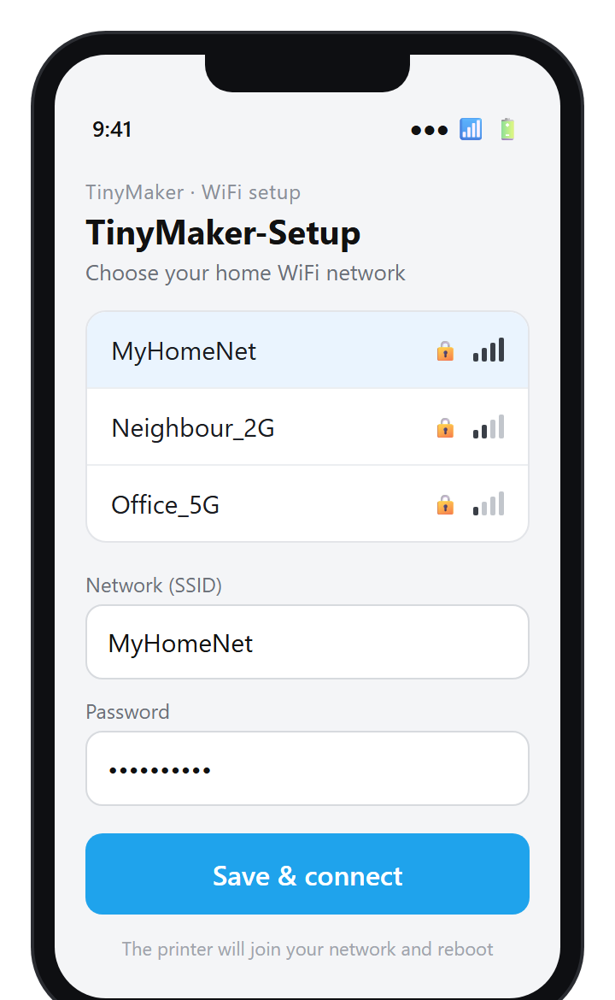
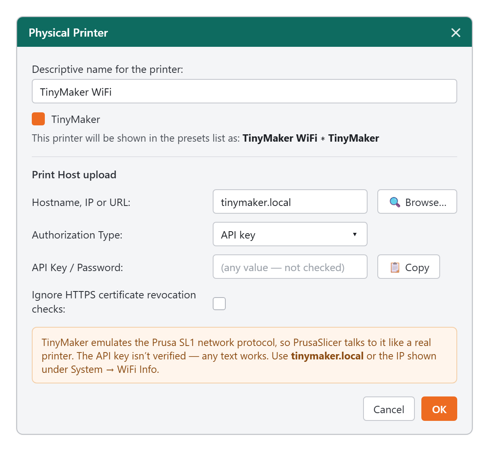
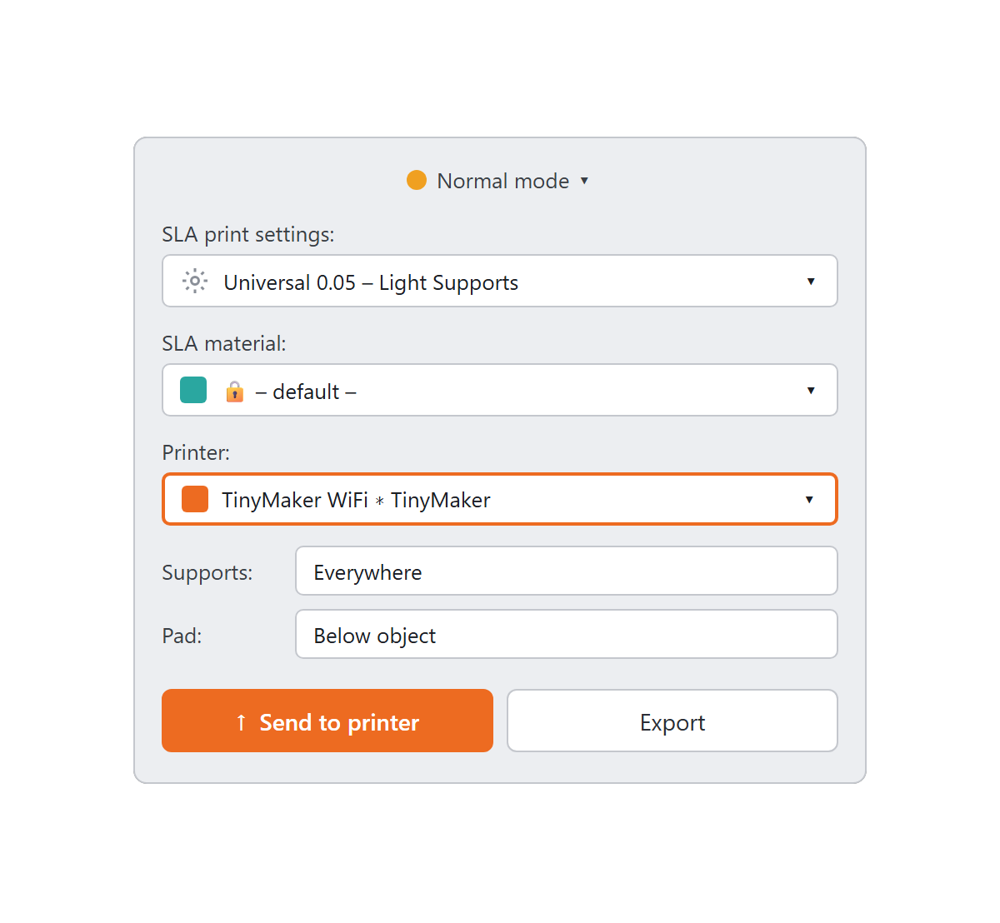
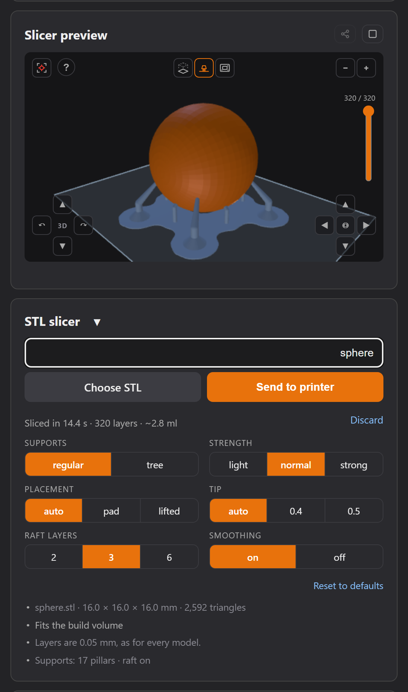
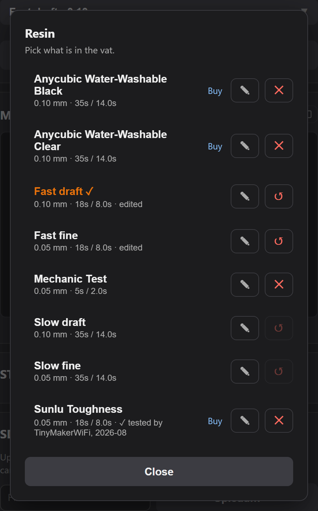
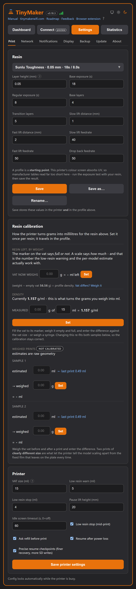
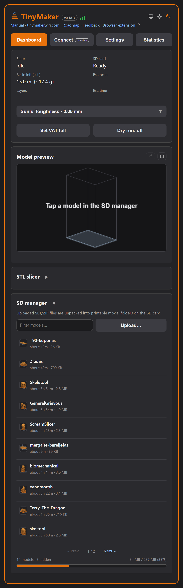
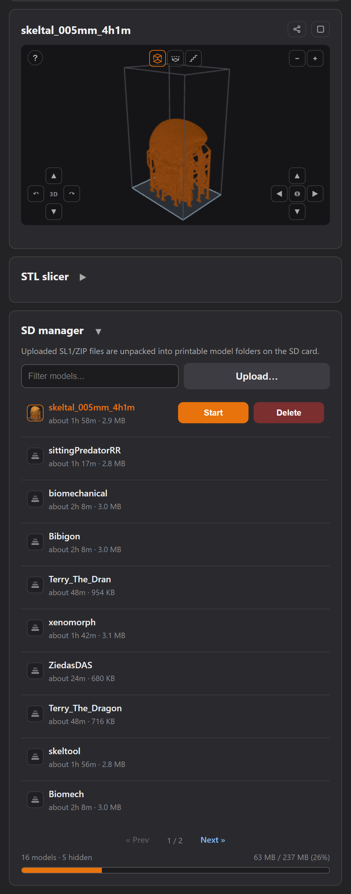
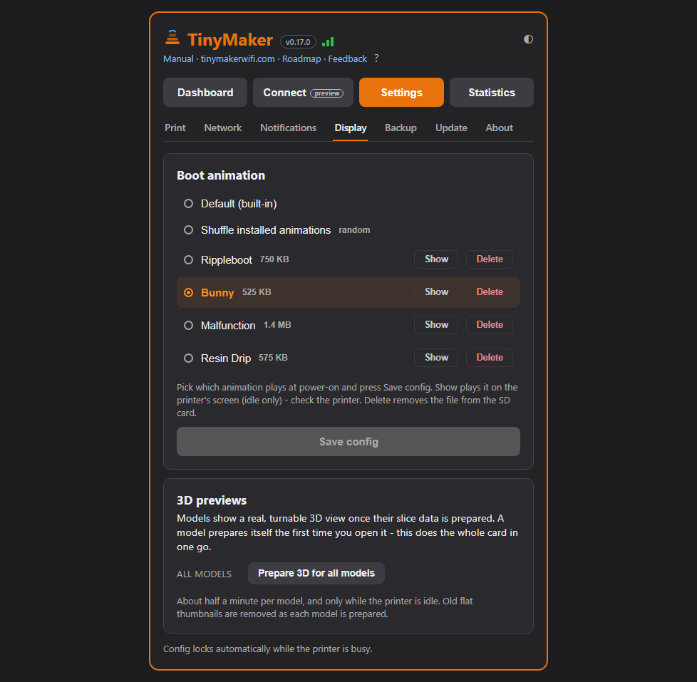

1What this firmware adds
TinyMakerWifi is a modified firmware for the open-source TinyMaker MSLA (resin) 3D printer. It keeps everything the original firmware does and adds a wireless layer on top — so you can send models straight from your slicer and update the printer without ever touching the SD card or a USB cable.
- WiFi, set up from your phone on first boot — no credentials in code.
- Direct upload from PrusaSlicer with the “Send to printer” button.
- Import
.sl1/.zipfrom the SD card — no network needed. - A web dashboard — print status, controls, SD manager and a 3D preview in any browser, on the computer or on the phone.
- A slicer in the browser — drop in an STL and the dashboard slices it itself: orientation, supports, raft, a 3D and a layer-by-layer preview, then straight onto the SD card. No desktop slicer needed, and a phone is enough.
- Named resin profiles — the whole recipe for one resin (both exposures, base and transition layers, all four lifts, the density and its weighing calibration) under one name, switched in a single press. Two are built into the firmware; more can be installed from a published library.
- A real 3D preview, and live print progress — the model turns in the browser before you start, and while it prints the shape fills in layer by layer, on any device that opens the dashboard.
- Over-the-air firmware updates — the printer updates itself over WiFi.
- Resin estimation & level tracking — how much resin a model needs, and how much is left in the VAT.
- Home Assistant / MQTT integration (optional).
- Telegram, WhatsApp or Discord notifications — print finished / canceled / low-resin pause, straight to your phone.
Everything wireless can be switched off right on the printer (System → Advanced), so you can always fall back to plain, offline SD-card printing.
2Quick start
- Power on. On first boot the printer opens a
TinyMaker-SetupWiFi hotspot. - Join it from your phone and pick your home WiFi in the little page that pops up. The printer reboots and connects (~5 s).
- Find the printer’s address under System → WiFi Info (or use
tinymaker.local). - Get a model onto the printer — three ways, pick one:
- From PrusaSlicer — slice, then “Send to printer”.
- From the dashboard — drop an STL into the browser slicer, let it slice, and it lands on the card ready to print.
- By hand — copy an
.sl1/.ziponto the SD card.
- Print. Pick the model in the Print menu and press OK — or start it from the web dashboard.
3Installing the firmware (first time)
This one-time step is done over USB. After it, every future update is wireless (see Updating the firmware). If your printer already runs TinyMakerWifi, skip this section.
Method 1 — the web flasher (recommended)
connect.tinymakerwifi.com/flash.php flashes the latest release straight from your browser — nothing to download or install:
- Connect the printer to your computer via USB.
- Open the web flasher in Chrome or Edge (they support Web Serial; Firefox and Safari don’t).
- Click Connect and pick the printer’s serial port. Unsure which one it is? Unplug and replug the USB cable and watch which entry appears.
- Flash — the tool fetches the latest release by itself. Power-cycle the printer when it finishes.
CH341SER.EXE, in the repo’s Driver folder), then try again.Flashing fails with “ERROR: Timeout”
If the flasher connects, downloads the firmware and then dies partway through Writing firmware-full.bin, the transfer speed is almost always the culprit - not the browser. Work down this list:
- Lower the baud rate. The Baud rate dropdown on the flasher page defaults to
921600. Set it to115200and flash again. It takes a few minutes instead of about half a minute, but it copes far better with marginal cables and USB-serial chips. - Swap the USB cable. Charge-only cables, and cables with thin data lines, are the second most common cause. Use a short, known-good data cable.
- Plug straight into the computer - not through a hub, dock, monitor or keyboard port.
- Update the CH340 driver (see the note above) - an old Windows-bundled driver produces exactly this symptom.
- Several ports in the picker? Unplug the printer, reopen the port picker, plug it back in, and choose the entry that appears.
Method 2 — already running TinyMakerWifi?
Then you don’t need USB at all: update over WiFi from System → Update on the printer, or from the dashboard’s Settings → Update — see Updating the firmware.
Method 3 — manual flashing (fallback)
Download the latest firmware-full.bin from the project’s Releases page. Releases contain two files — they are not interchangeable:
| File | Used for | How |
|---|---|---|
firmware-full.bin | First-time USB flashing | flash at address 0x0 |
firmware.bin | Wireless updates only, later | browser, http://tinymaker.local/update |
firmware-full.bin. Flashing firmware.bin over USB leaves the printer unable to boot — it has no bootloader or partition table.- Open esptool.spacehuhn.com (a generic ESP flasher) in Chrome or Edge, plug in the printer via USB and click Connect.
- Remove any pre-filled rows, click ADD, choose
firmware-full.bin, and set its address to0. - Click Program, wait for it to finish, then power-cycle the printer.
0x0).The first boot after flashing takes a few extra seconds and starts the TinyMaker-Setup hotspot. Printer settings (exposure, layer height…) return to factory defaults — unless a settings backup is on the SD card: the printer then offers to restore everything on first boot (see Backup & restore).
4Connecting to WiFi
- Power on the printer. On first boot it starts a
TinyMaker-Setupaccess point. - Connect to it with your phone — a setup page opens automatically (or browse to
http://192.168.4.1). - Choose your home WiFi network and enter the password.
- The printer connects and briefly shows its IP address. Credentials are stored, so later boots connect on their own in about 5 seconds.

On every later boot the printer shows animated signal bars while connecting — they turn green when it’s on the network, and the printer goes straight to the main menu (the IP address is only shown after the first-time portal setup). Need the address later? WiFi status, signal strength and IP are always under System → WiFi Info.
If the saved network can’t be reached, the printer simply boots offline after 15 s — printing from the SD card works as always.
Resetting WiFi
To move the printer to another network, erase the stored credentials:
- From the menu: System → WiFi Info → press OK → confirm. The printer reboots into the
TinyMaker-Setupportal. - Emergency reset: hold the BACK button while powering the printer on — use this if it keeps trying an old network and you can’t reach the menu.
5The printer screens
The small status display drives the whole on-printer interface — WiFi setup, upload progress, the resin estimate, the device toggles and self-update. Three buttons: Back, Up and OK. A green (connected) or grey (offline) dot on the main menu shows WiFi status.

The System menu is where the new features live: WiFi Info, Advanced (device toggles, grouped into Network / Resin / Display), Statistics (lifetime counters and the last boot/crash record), Update (firmware) and About (version and build info). The full item-by-item reference is in System menu reference.
6Printing from PrusaSlicer
The printer emulates the Prusa SL1 network protocol, so PrusaSlicer’s “Send to printer” works out of the box.
- Import the TinyMaker printer profile (
TinyMaker.ini, in the repo) via File → Import → Import Config. - Save all three presets. Click the floppy-disk icon next to Print settings, Material and Printer and accept the names. Imported presets are temporary until saved — skip this and PrusaSlicer forgets the printer every time you close it, and you start over.
- Add a physical printer: click the cog next to the printer profile → Add physical printer. Set Hostname to
tinymaker.local(or the IP from System → WiFi Info); the API key can be any text. - Click Test — it should report success (the printer must be on and on WiFi).
- Slice, then press Send to printer. The printer shows Receiving → Unpacking → Model ready, and the model appears in the Print menu.


Unlike an FDM slicer, the layer height here is set on the printer (Settings → Layer height), not in the file — the file is just a stack of 0.05 mm images, and at the 0.10 mm setting the firmware exposes every other one. Slice at anything else and the part comes out the wrong height: at 0.3 mm it would be six times too short.
display_orientation = landscape, 320×240 px over 40.8×30.6 mm). An old profile still slices and still uploads, but the layers come out turned, so the print is cropped at the edges and nothing on screen warns you.7The built-in slicer (slice in the browser)
The firmware ships with its own SLA slicer, running right in the dashboard — no PrusaSlicer, no computer-side install, works from a phone too. Switch it on once under Settings → Network → STL slicer in the dashboard and a Slicer card appears on the dashboard.
- Choose STL and pick a model file.
- Stand it the right way up. Fast fit drops it flat; Optimal fit searches for the rotation that needs the fewest supports, the way PrusaSlicer does, and then tells you what it won or lost against the fast one. Lay flat, Flip over, Tilt 90° and Rotate 90° are there when you would rather decide yourself.
- Watch it slice — supports and a raft are generated automatically, and the dashboard locks under a spinner while it works, just like during a print.
- Check the result in the preview: 3D with or without supports, the flat 2D layers, or the UV view — each layer exactly as the masking LCD will shine it.
- Press Send to printer — the sliced model lands on the SD card ready to print, exactly like a PrusaSlicer upload.
Six settings sit under those buttons, and Reset puts them all back: Supports (regular or tree), Strength (light, normal, strong), Placement, Tip, Raft and Smoothing. You can slice without touching any of them - they only nudge what the slicer already decided.

The slicer itself is a module the printer keeps on its SD card: fetched once from our GitHub Pages, verified byte-for-byte against checksums the printer fetches over certificate-checked HTTPS, and served locally from then on. It survives firmware updates and works with no internet once cached. Its version is managed separately from the firmware — see the Slicer module card in Settings → Update; a slicer update never reflashes the printer.
8Printing from the SD card (no network)
No WiFi? Copy an .sl1 or .zip (exported by PrusaSlicer or UVtools) into the root of the SD card. It appears in the Print menu in blue, among the models.
- Press OK on a blue entry to convert it into a printable model (progress is shown). When done, the model appears in the list and the archive is deleted from the card.
- Long-press OK on a blue entry to delete the archive without importing.
9Starting & deleting models
In the Print menu:
- Start a print: select a model and give OK a short press. The preview shows Layers / Height / Time; press Up there to estimate resin (see below), or OK to start.
- Delete a model: press and hold OK for ~1.5 s. A Delete model? confirmation appears — release, then OK = delete, Back = keep. Large models take a moment (hundreds of layer files).
10Resin profiles, estimate & refills
The printer has no resin sensor — instead it keeps count. Every printed layer’s cured volume is subtracted from the VAT level, and the estimate survives reboots and firmware updates.
Resin profiles
A profile is the whole print recipe for one resin: layer height, base and regular exposure, base and transition layers, all four lift settings, and the resin’s density with its weighing calibration. Switching resin is one press instead of ten fields, and a number that took an exposure test to find can no longer be lost to a stray edit.
Layer height is part of the profile, because exposure without it is only half a number: 0.05 mm needs less light than 0.10 mm. Two profiles for one resin is the normal case. What describes the printer rather than the resin - vat size, the low-resin levels, the pause lift - stays outside.
Two profiles are built into the firmware, Fast and Slow, so
the list is never empty: no SD card, no network, and after a factory reset. Editing a built-in
writes a small overlay file on the card that shadows the flash values;
Reset to factory deletes it. Every other profile lives in /resin/*.json on
the card.
Picking the resin
- Dashboard, main view: the resin row sits next to how much is left - which resin is in the vat is state, not a setting. Press it and pick from the list.
- Dashboard, Settings → Print: the same row, and the recipe opens underneath it.
- At the printer: System → Advanced → Resin → Resin profile steps through the installed profiles and applies the one shown. Creating and renaming stay in the dashboard - there is no keyboard at the machine.
With no profile selected the row reads “Not set - printing is blocked” and the printer refuses to start. That is deliberate: printing with nobody’s recipe used to run on whatever numbers happened to be left in memory.

Installing a profile from the library
The picker also lists profiles you do not have yet, published by this project. Press Install and the profile is written to the card. A “✓ tested by” badge means someone actually printed with that resin on this printer and wrote down what worked - it saves you an exposure test. Some entries carry a Buy link; the price is the same, the link simply goes through us.
Your browser fetches the profile and posts the values to the printer, so the printer itself never opens an outside address. Profiles you already have are not shown again - a corrected profile is therefore published under a new name, not silently swapped underneath you.
Editing and saving
- Save stores the values in the printer and in the profile above it.
- Save as… keeps the original and starts a new profile from the values on screen.
- Rename… is offered for your own profiles (a built-in keeps its name).
- Discard changes appears as soon as a field differs from the saved profile and puts all ten back.
- Reset to factory appears when a built-in has been edited, and removes the overlay.

Grams instead of guesswork
Under Settings → Print → Resin calibration the printer learns to turn weight into millilitres for the resin above; the calibration travels inside the profile.
- Resin left, by weight: weigh the vat, type the grams, press Set. The printer subtracts the empty vat’s weight and divides by the density. The marker on the vat says full or not; a scale says how much, and that is the number the low-resin warning and the per-model estimate work with.
- Density is measured once per resin: weigh a known volume, enter both, press Set.
- Weighed prints: after a print, enter what the printer estimated and what the vat actually lost. Two such samples fit a correction curve, and from then on the estimate follows your resin rather than an assumption. On this printer the fitted correction landed within about 1 % of the weighed truth.
Estimate before printing
On a model’s print preview, press Up to estimate the resin it needs. It is shown in ml and in vat fills — e.g. 12.4 ml = 0.8 VAT. Your VAT size is adjustable (10–40 ml, default 15) in Settings. Live ml is shown while printing.
Level tracking & refills
- “Resin left (est.)” is shown on the dashboard (and as a Home Assistant sensor with a low-resin alert).
- After refilling, tell the printer: System → Advanced → Resin → VAT refilled, or the VAT refilled button on the dashboard. The estimate restarts from a full VAT.
- Ask refill (default On): every print begins with a “VAT refilled?” question so the estimate stays honest. Tidy users who press VAT refilled themselves can turn it off.
- Before a print, if the level is low (or a fresh estimate says the model needs more than what’s left), the printer shows “Low resin!” with the numbers — start anyway or go back.
- A heads-up before the stop (Warn (ml), 3–15 ml): while printing, the level crossing this mark says so on the screen and, if notifications are set up, on your phone - with the layer it is on, so you can decide whether to top up now or let it run.
- Low resin stop (optional, default Off): mid-print, when the level reaches Stop (ml) (1–3 ml), the printer finishes the layer, lifts and pauses with “Refill VAT!” - top up, press VAT refilled or resume.
11The web dashboard
Open the printer’s IP address in any browser for the full dashboard: live print status and controls, SD-card management with one-click start/import, device settings and firmware updates — in tabs styled to match the printer. The ◐ crescent next to the Manual link switches between the light and dark theme (your choice sticks per browser), and small ? marks next to the tricky settings open short explanations.

While a print runs
The state line counts the current step down — Curing · 9s, Lifting · 4s — and after Stop or a finished print it counts the ride to the top the same way, so that wait finally has a number. Next to it a small dot says whether the printer answered just now (green) or is mid-move (amber, syncing).

That dot is worth understanding, because it explains something that looks like a fault. One ESP32 runs the screen, the motor, the UV LED and this web server, all off a single SD card — so the page is served in the gaps between layer moves. During the peel the printer deliberately answers nothing: a pause there could mark the part. A few seconds of amber is the printer working, not the page hanging. The SD card is locked for the same reason — uploads and file actions come back when the print ends, and the model list stays readable throughout.
On a larger screen it spreads into two columns:

New to the printer? A dismissible Getting Started checklist on the dashboard walks you through the first steps (WiFi → slicer → first model → first print → exposure calibration → integrations) — the printer ticks steps off by itself where it can.
Put it on your phone's home screen: open the dashboard in the phone browser and pick Add to Home screen (Chrome: the ⋮ menu; iPhone Safari: Share → Add to Home Screen). You get the printer's icon on the home screen, and on iPhone it opens fullscreen like an app. (A browser "install" banner won't appear — the printer serves plain HTTP on your LAN — but the shortcut works the same.)
If the power drops mid-print
The printer writes a tiny checkpoint to the SD card as it goes, so a power cut is recoverable. When it boots back up it shows Power restored with the model name and the layer it reached, and three choices:
- Resume — the plate goes back down (no homing, which would drive the part into the vat) and the print continues from where it stopped.
- Lift plate (the up-arrow) — if you don't want to continue but the plate is pressed down on a stuck print, this clears the checkpoint first, then peels the part free and raises the plate.
- Discard — forget the interrupted print and boot normally.
Recovery is best-effort, not a perfect guarantee. If the outage happens during the exposure (the longest part of each layer, so the most likely moment), the plate's position is known exactly and the print continues cleanly. If it happens while the plate is mid-move (lifting or dropping between layers), the printer only knows the pre-lift height, so the resumed layers can sit slightly high — usually a faint seam, occasionally a separation at that one spot. It never risks the opposite direction (into the FEP), so the worst case is a cosmetic mark or losing that print, never a damaged screen or film. A future firmware update is planned to tighten this — checkpointing the plate's position more finely during the brief lift/drop, so even a mid-move outage recovers to within a fraction of a millimetre.
The same three buttons also appear on the dashboard the moment the printer comes back — so if the outage happened while you were away, you can resume (or lift, or discard) from your phone, as long as no one has touched the printer's buttons since it powered on. Before resuming, make sure the vat and the plate haven't been moved — the plate lowers back into the resin on trust.
Power the printer from its mains adapter, not a USB power bank. A weak or portable supply can sag the moment the plate lifts — the stepper's current draw briefly dips the voltage — and on a marginal supply that dip can even reset the printer part-way through the recovery. If a resume keeps rebooting back to the same prompt, that voltage dip is the usual cause: switch to the supplied adapter and try again.
Two settings decide how this behaves, both under System → Advanced → Resin (and in the dashboard’s Settings → Print). Power resume turns the whole thing on or off — off means the printer never checkpoints and always starts fresh, like the stock firmware. Resume mode chooses how finely it remembers: Balanced writes a checkpoint every 800 ms of plate movement, Precise every 400 ms — a resume closer to where the power went, at the cost of more writes to the card.
Power-loss checkpoint engine contributed by Tanner Steorts.
The SD manager & the Model preview card
Uploads are safe: a model unpacks into a temporary folder and replaces the old one only after unpacking succeeds, and uploading a name that already exists asks Replace / Rename / Cancel (a PrusaSlicer re-upload simply replaces, as you’d expect while iterating).

The card leads with the model list — the part you use every day. Upload… sits in its corner: one click opens the file picker and the file starts uploading the moment you choose it. Storage sits at the bottom as a thin bar, out of the way until it matters (it turns amber past 85%). Uploading a model that doesn't fit is refused before anything is sent, so the bar is information, not a thing to watch.
Every model row is the preview button: click it and the browser rebuilds the shape from the sliced layers and renders it into the Model preview card, with a live percentage while it loads, then a compact info line — layers · height · print time · resin — and a Share model button (when TinyMaker Connect is registered). The selected row is highlighted, so a card full of models never leaves you guessing which one is on screen. Start and Delete appear on the row itself — under the mouse on a computer, on a tap on the phone — and Start goes straight to the Start this print? question without waiting for the preview.
The card itself is always on the dashboard, like the SD manager: before anything is previewed it shows a hint, and the last previewed model is remembered — a page reload brings it straight back from the saved preview (no re-render, nothing to redo).
The preview is a real, smoothly-shaded 3D model rendered on the graphics card (three.js — fetched once, then kept on the printer's SD card, so it works with no internet and survives firmware updates). Around it:
- Rotate / zoom / pan with the mouse or fingers, an expand button for a bigger window, and a clip slider that cuts the model at any height so you can look inside — the cut shows the true voxel steps of the sliced layers.
- Two view buttons: the 3D one toggles supports on/off, the 2D one switches between the flat layer view and the UV view — the layer exactly as the masking LCD will shine it.
- Smooth rounds off the voxel steps for a prettier picture. It is off by default, because the same smoothing thins out anything flat and thin — the raft disappears altogether — and the preview's job is to show what will really be on the plate.
- Full print resolution, always — there is no quality switch to find. The first time a model is opened the browser decodes every layer (roughly a minute per model); the result is cached next to the model on the SD card, so from then on it is instant. Prepare 3D for all models (Settings → Display) runs that once for everything already on the card.
Resin on the info line: when the exact amount is known it is shown outright; otherwise a quick ~X ml (quick) estimate appears with the preview, free of charge. Clicking the ~ value runs the exact scan on the printer — it decodes every layer, so expect roughly a minute per 100 layers.
Start a print (from the row’s Start or on the printer) and the same card takes over automatically as a live progress render: the printed part fills in with color, the rest stays a ghost outline. It costs the printer nothing (the browser renders from a few prefetched layers).
The card’s title is a link. It names the model on screen, and clicking it takes the model list to the page that model sits on — useful once you have more models than fit on one page, and during a print, when the title reads Printing 42% · Tooth and you want that model in the list in front of you. Titles that name a state rather than a model — Model preview, Slicer preview — are plain text. The window itself is grown with the button in the card’s corner, and Esc brings it back.
Any device, at any point in the print. You do not have to have opened the preview beforehand, and it does not have to be the same browser or the same phone — open the dashboard an hour into a print, on a device that has never seen the model, and the growing shape is there. The printer keeps a small stack of layer silhouettes in memory as it prints and hands them to whoever asks, so nothing is read from the SD card mid-print. (Opening the preview first still gives the fuller picture: the complete model as a ghost, rather than only what has been printed so far.)
Marking a defect
When the browser slicer is switched on, the preview grows one more control in its top-left corner: a defect marker. It exists for one job — telling us where something went wrong, instead of describing it in words a week later.
Press it and the view stops rotating: a red frame around the picture and a crosshair say you are marking, not looking. Drag a box over the bad spot — a support that grew into the part, a hole that closed, a raft that peeled — and add one line of text. A Defect markers panel appears under the preview card with every mark you made, each keeping the picture of that spot and the camera it was seen from, so the same view can be recreated later.
Four buttons finish the job: Send posts the report to the feedback inbox (the same one the dashboard header links to), while Copy and JSON keep it on your machine and Clear throws the marks away. Nothing leaves the printer until you press Send.
What travels with it, so nobody has to ask. The slicer version and where its
module came from, the firmware version and build, the dashboard’s own checksum, the
model’s name, layer count and scale, and for every mark the layer number written with
its step (~L152 @0.10 mm) — because the preview counts in printer layers and
the slicer in the ones it sliced, and the same spot is 152 in one and 302 in the other.
Each mark also remembers whether it was made before slicing or on the sliced
result, so one report can carry both “here is what I asked for” and “here is what came
out”.
The Settings tab
Settings is split into sections, switched by underline tabs — Print / Network / Notifications / Display / Backup / Update / About — shown one at a time, each with its own Save config button (saving from any section preserves the other sections’ values):
- Print — layer height, exposures, lifts, VAT size, resin profiles and the resin-tracking options.
- Network — the WiFi / Web control / boot-update-check switches, the Slicer switch, the anonymous usage ping, MQTT, and TinyMaker Connect — including the Auto backup settings to Connect checkbox (it asks to confirm when toggled).
- Notifications — one choice of Telegram, WhatsApp or Discord (see notifications).
- Display — Boot animations and the 3D previews card with Prepare 3D for all models.
- Backup — just the actions: download / backup to SD / restore (see Backup & restore).
- Update — firmware install latest / version picker / file upload, and the Slicer module card (see Updating the firmware).
- About — versions, credits and links.
The Connect tab (shown once TinyMaker Connect is registered) is loaded from the Connect server and uses the same underline sub-tabs; its registration status is shown at the bottom.
12System menu reference
The System menu is where everything beyond printing lives. OK opens an item or changes a value, Back steps out:
| System item | What it does |
|---|---|
| WiFi Info | Connected network, signal strength and the printer’s IP. OK here offers a WiFi reset (reboots into the setup portal). |
| Advanced | Device toggles, grouped into Network / Resin / Display — the tables below. |
| Statistics | Lifetime print hours, UV LED on-time, this boot’s reason and the last interrupted print (if any) with its layer. |
| Update | Installed vs latest firmware; installs a new version over WiFi. See Updating the firmware. |
| About | Firmware version, build date and the project link. |
Advanced → Network
| Item | What it does |
|---|---|
| WiFi | On/Off — the whole network (web, PrusaSlicer upload, MQTT, self-update). Confirming reboots to apply; Cancel changes nothing. |
| Web control | On/Off — browser actions. Off = the dashboard turns view-only; slicer upload and MQTT keep working. |
| MQTT | On/Off (shown once MQTT is configured in the dashboard). |
| Boot update | On = the printer checks for new firmware right after WiFi connects at boot and offers Install / Later on the screen. |
Advanced → Resin
| Item | What it does |
|---|---|
| Resin profile | Steps through Fast, Slow and every profile on the card, applying the one shown. Reads “Not set - blocked” when none is chosen (printing is refused until one is), and a * after the name means that built-in has been edited. See Resin profiles. |
| VAT refilled | Press after refilling — restarts the level estimate from a full VAT. |
| Low resin stop | On = mid-print, when the estimate reaches Stop (ml), the printer finishes the layer, lifts and pauses for a refill. |
| Stop (ml) | The level that stops the print: 1–3 ml (OK cycles). |
| Warn (ml) | The earlier heads-up, before the stop - on the screen and on your phone: 3 → 5 → 8 → 10 → 12 → 15 ml (OK cycles). |
| Ask refill | On = every print starts with a “VAT refilled?” question. |
| Power resume | On = the printer checkpoints as it prints and offers to resume after a power cut. Off = it never checkpoints and always starts fresh, like the stock firmware. |
| Resume mode | Balanced writes a checkpoint every 800 ms of plate movement, Precise every 400 ms: a resume closer to where the power went, at the cost of more writes to the card. |
| Pause lift | How high the plate rises when you pause to look at the print: 20–40 mm in 5 mm steps (OK cycles). A dry run uses the same height instead of going to the top. |
| Exposure test | Cures an 8-bar calibration strip straight from the printer — each bar gets a different exposure time around your Regular setting. Pick the crispest bar and set its time in Settings. Resin in the vat, no build plate. |
| Dry run | Test prints without UV — motion and display only. Great for checking mechanics or a new model without wasting resin. Note: while Dry run is on, the UV LED stays off everywhere, including the exposure test. |
Advanced → Display
| Item | What it does |
|---|---|
| Idle timeout | After this much inactivity the idle screen dims into a screen saver (“TinyMaker” + IP drifting around). 30 s…10 min, Off = never; fresh installs default to 60 s. |
| Boot animation | Which animation plays at power-on — OK cycles Default, Shuffle (with two or more installed) and every animation on the SD card (see Boot animations below). |
- WiFi Off makes the printer fully offline, like the original firmware. Toggling it asks “Reboot now?”. Turn it back on right here — no reflash or reset needed.
- Web control Off makes the dashboard view-only: people can watch the print, but every action is disabled. Turn it back on on the printer (the settings form is one of the things it locks).
- If WiFi is off and you open System → Update, the printer offers to enable WiFi temporarily just for the update.
Both switches default to On and stay On after upgrading from an older version — nothing changes until you change it.
Exposure calibration test
Exposure time is the single most important resin parameter — and every resin (even every color) cures differently. The test finds your resin’s time in one go: the printer cures an 8-bar strip straight from its masking LCD, each bar with a different exposure. No slicer, no SD file.
The bar times are proportional to your current Regular exposure (R) — from 40 % to 160 % of it, so the spread is meaningful for fast and slow resins alike. Bar 5 (100 %) is always your current setting:
| Bar (dots) | 1 | 2 | 3 | 4 | 5 | 6 | 7 | 8 |
|---|---|---|---|---|---|---|---|---|
| % of R | 40 | 55 | 70 | 85 | 100 | 115 | 135 | 160 |
| R = 14 s | 6 | 8 | 10 | 12 | 14 | 16 | 19 | 22 |
The ladder follows your setting automatically. To test shorter (or longer) times, just change Regular exposure in one place — dashboard → Settings → Regular exposure → Save, or the printer’s Settings menu — and the test range recalculates itself; the Advanced menu row shows the current range (e.g. “2-16s strip”). After the test, set the winning bar’s time as your final value.
- Prepare: resin in the vat (stir it first!), build plate removed — the strip cures directly on the vat film. Make sure Dry run is off.
- Run: System → Advanced → Resin → Exposure test → Start. A progress bar runs for the longest bar’s time (~half a minute); Back cancels.
- Peel & rinse: gloves on, lift the strip off the film with a soft plastic scraper, rinse in IPA, dry.
- Judge the bars against the light:
- Under-exposed (short end): thin, rubbery, fuzzy edges, breaks or partly stuck to the film.
- Just right: sturdy, sharp clean edges, even thickness.
- Over-exposed (long end): fatter than its neighbours, bloated edges, a thin parasitic film around it (light bleed).
- All bars nearly identical? Your resin cures faster than the shortest step — lower Regular exposure (e.g. to 8 s) and run the test again. Note: a fresh, unwashed strip always feels rubbery; judge after an IPA rinse, and flexible resins (ABS-like) stay bendy by design.
- Set it: pick the lowest time that still cures sharp and sturdy (best detail; if torn between two, take the longer one) and enter it as Regular exposure in Settings. Identify bars by their dots (1 dot = shortest) and read the time from the table above. Keep Base exposure at roughly 2.5× the new Regular — it’s about first-layer adhesion, not detail.

Advanced: your resin’s working curve (Jacobs)
The test strip holds more data than “which bar looks best”. Cure depth grows with the logarithm of exposure time — that’s why doubling the time doesn’t double the thickness, and why you judge bars by edges and holes, not by how thick they feel. If you want numbers:
- Measure the thickness of at least 3–4 bars with calipers (skip broken ones).
- Plot thickness against
ln(seconds)(any spreadsheet; use the bar times from the table above). The points form a straight line — that’s the resin’s working curve. - The slope is Dp (how deep light penetrates); where the line crosses zero thickness is Ec (the minimum exposure that cures anything). Together:
depth = Dp · ln(t / Ec). - Read your time: for reliable layer bonding you want the cure depth around 2× your layer height (0.1 mm for 0.05 mm layers) — find where the line reaches that thickness and use that time as Regular exposure.
Boot animations
The printer can play a short animation on its screen at power-on — and you can swap it. Installed animations live on the SD card and are picked in two places:
- On the printer: System → Advanced → Display → Boot animation — OK cycles Default (the built-in logo), Shuffle and every installed animation.
- In the dashboard: Settings → the Display tab (it holds the boot animations and the 3D-preview options). Picking a row only stages the choice — press Save config to apply it. Show plays any installed animation on the printer’s screen right away (only while the printer is idle), and Delete removes its file from the SD card.

Shuffle (offered once two or more animations are installed) plays a random installed animation on every boot.
Getting new animations onto the printer:
- Default library: below the installed list, the Display tab shows a small library hosted on the project’s GitHub Pages — press Install and the printer pulls the file onto the SD card. Installing does not select it — pick it and Save config when you’re ready.
- From the community site: browse the animation library in the Connect tab and install from there (WiFi and Web control must be on).
- By hand: copy a
.tmbanimation file into the/bootanimfolder on the SD card.
3D previews
The second card on the same Display tab has nothing to do with animations. A model can only be turned in 3D once its layers have been decoded, and that happens by itself the first time you open it — roughly a minute — after which the result is stored next to the model on the SD card and never has to be done again.
Prepare 3D for all models does the whole card in one go, so no model keeps you waiting later. It is quicker per model — about half a minute — because it prepares the lighter version that the list and the phone use; opening a model still fills in the full-resolution one. It runs only while the printer is idle and stops by itself if a print starts. Old flat thumbnails are replaced as it goes, which is the other reason to run it once after an update: the pictures in the model list are redrawn to match what the dashboard draws today.
Boot animations were contributed by Tanner Steorts (@Tann2019); Shuffle by Brian Karmelk (@Briadark).
13Maintenance menu
The main menu’s Maintenance entry holds the three jobs that touch the hardware rather than a file: levelling the plate, moving it by hand, and curing the leftovers out of the vat. None of them need a computer.
Level Build Plate
Homes the plate downwards until it sits flat on the screen, which is how the plate is squared up and its zero is set. The printer says so before it moves — a red screen reading “Plate must be EMPTY. Homing goes DOWN.”
- Take the printed part off the plate first, and take the vat out (or make sure levelling is what you actually want) — the plate is going to travel all the way down.
- Use it when prints stop sticking evenly, after you have removed or refitted the plate, or after transport.
Move Build Plate
Drives the plate up or down by hand, in the step you pick: 0.1 mm, 1 mm or 10 mm. This is the tool for everything that is not levelling:
- Raising the plate after a power cut so you can look at the part or take it off.
- Getting the plate clear before pulling the vat out.
- Closing in on a position gently — 10 mm to travel, 1 mm to approach, 0.1 mm for the last bit.
Both ends of the travel stop themselves, and say so. Going up, the plate stops at the top of its travel and the screen reads Plate is at the top — press Up again and nothing happens, which is the answer, not a fault. That is also where the plate stands right after every print, because the finishing lift parks it there. Going down, the moment the plate reaches the endstop the printer takes that as its zero and shows Plate is home: the height it reports is trustworthy again, exactly as after a homing run.
Clean Resin Vat
Lights the whole screen for a set time, so everything left in the vat cures into one thin sheet you can lift out in one piece — instead of chasing hardened crumbs around with a spatula. Run it when you change resin, when a print has failed and left something behind, or before putting the printer away.
- Take the build plate out and leave the vat in place with the resin still in it.
- Maintenance → Clean Resin Vat. Set the exposure with the arrows — 30 to 60 seconds — and start. Longer means a thicker, sturdier sheet; thin resin needs the longer end.
- Wait for it to finish, then lift the sheet by a corner and peel it out slowly. Gently flexing the vat pops it loose if it clings.
- Wipe what is left with IPA and a soft paper towel, and check the film against the light: it should be clear, with nothing cured stuck to it.
14Updating the firmware and the slicer
Two things update here, and they are separate. The firmware is the printer itself — installing one reboots it. The browser slicer is a module kept on the SD card: it carries its own version and its own install button, and updating it never reboots the printer or interrupts a print. Both live in the same pane.
Three ways to update the firmware:
- On the printer (no computer): System → Update shows the installed version and checks GitHub for the latest. If a newer one exists, the Install button lights up — press OK and the printer downloads and flashes it over WiFi.
- From the dashboard — Settings → Update: installed vs latest with an Install latest button, a version picker (install any released version; downgrades ask to confirm) and a file upload for a
firmware.bin. - For developers: PlatformIO OTA via the
tinymaker-otaenvironment (open System → Update on the printer first — that path keeps the strict gate).

Two comforts while updating: the printer also checks by itself — shortly after WiFi connects at boot it looks for a newer version and shows “Update available — Install / Later” on the screen (choosing Later offers to turn the check off; the switch lives in System → Advanced → Network → Boot update and in dashboard Settings). And when you start an install from the browser, the dashboard locks under an “Updating firmware” overlay and reloads itself when the printer is back — no guessing whether it finished.
The same Settings → Update pane also holds the Slicer module card (shown when the browser slicer is switched on): the version on the printer vs the latest published, an Install latest button and a version picker. It updates independently of the firmware — a slicer update never reflashes the printer.
While a print runs the card is locked, and the printer will not read it mid-layer — so the module card does not claim anything about what is installed: it says the card cannot be read now, and copying resumes when the print ends. The same is true of the backup check in the Backup tab.
Backup & restore
Everything you have configured — print settings, device toggles, MQTT, even the lifetime print and UV LED counters — fits in one backup file. In the dashboard’s Settings → Backup tab:
- Download backup — saves
tinymaker-backup.jsonto your computer. - Backup to SD — stores the file on the printer’s SD card. Do this before a full USB reflash: the reflash wipes all settings, but on the first boot the printer finds the backup on the SD card and asks “Restore settings from SD backup?” — one press and everything is back. Settings shows when the SD backup was made, so you can tell at a glance whether it’s fresh.
- Restore from SD — applies the backup stored on the SD card at any time (the button is enabled only when one is present; while a print runs the card is locked, so the panel says it cannot check rather than claiming there is none).
- Restore from file — applies an uploaded backup at any time.
Auto backup to TinyMaker Connect (optional, for registered Connect users): a checkbox under Settings → Network → TinyMaker Connect keeps a backup on the Connect server after settings changes and after prints; the Backup tab then offers Download from Connect and Restore from Connect. Connect backups do not include the stored MQTT, notification or Connect secrets. When you register, save the recovery code (Retrieve / Copy buttons in the Connect section) — it restores your Connect profile if you ever reset the printer without a backup.

15Home Assistant (MQTT) & notifications
Optional ways for the printer to reach you, all configured in the dashboard’s Settings tab (MQTT in the Network section, the messaging channels in Notifications).
Home Assistant (MQTT)
Configure an MQTT broker and the printer publishes itself to Home Assistant with auto-discovery: print state, current layer, resin used, resin left + a low-resin alert, and run/remaining time — all as HA sensors you can put on dashboards or automate notifications on.
Phone notifications — pick a channel
No Home Assistant? The printer can message you directly when a print finishes (with the print time and resin used), pauses for a low-resin refill, or is canceled. In Settings → Notifications there is one choice — Off / Telegram / WhatsApp / Discord — each channel with its own ? setup help and a Send test message button.
Did the last message actually arrive? Under the channel picker the dashboard shows the result of the printer’s last automatic message - “Last automatic message: delivered 5 min ago”, or NOT delivered with the reason. It says automatic on purpose: Send test message takes a different path, so “the test works but nothing arrives while printing” is itself a useful clue - usually a token or chat id that is fine for a test but blocked when the printer is busy. The line stays hidden until there has been an automatic message to report on.
Telegram
Setup takes two minutes — the same steps are shown inline in the dashboard (the ? help next to the Telegram choice):
- Create a bot: in Telegram, message @BotFather, send
/newbot, follow the prompts, and paste the token into Bot token (Settings → Notifications → Telegram). - Open your new bot and press Start (or send it any message) — a bot can’t message you until you do.
- Get your Chat ID: open a chat with @userinfobot — a separate bot, search “userinfobot” in Telegram — and press Start; it replies with your numeric Id, which is your Chat ID. (For a group, add @RawDataBot to the group and use the negative id it prints.)
- Save config, then press “Send test message” — it should arrive within a few seconds.
WhatsApp (via CallMeBot)
WhatsApp messages go through the free CallMeBot gateway — a one-time activation from your phone:
- Open callmebot.com → WhatsApp text messages and add the bot’s current phone number to your contacts.
- Send it the message “I allow callmebot to send me messages” from your WhatsApp.
- It replies with your personal API key — enter it in Settings → Notifications → WhatsApp, together with your phone number (with country code).
- Save config, then Send test message.
Discord (webhook)
Discord needs no bot at all — just a channel webhook:
- In your Discord server open Server Settings → Integrations → Webhooks.
- New Webhook — pick the channel the printer should post to, then Copy Webhook URL.
- Paste the URL in Settings → Notifications → Discord, Save config, then Send test message.
16Troubleshooting & FAQ
The printer won’t connect to WiFi
After 15 s it boots offline — SD printing still works. To retry, reset WiFi (System → WiFi Info → OK, or hold Back while powering on) and set it up again.
Where do I find the printer’s IP address?
System → WiFi Info on the printer — it always shows the connected network, signal strength and IP. (The boot screen only shows the IP after the first-time portal setup; on routine boots the signal bars just turn green.) On most networks tinymaker.local works instead of the IP.
What SD cards work?
Format the card as FAT32 and keep it 32 GB or smaller — exFAT and NTFS aren’t read, and cards larger than 32 GB can’t be FAT32 without reformatting. A class-10 card is plenty. Copy .sl1/.zip archives into the card’s root (not a sub-folder).
PrusaSlicer “Test” fails
Check the printer is on and shows a green dot / an IP under System → WiFi Info. Use that IP if tinymaker.local doesn’t resolve on your network. The API key value doesn’t matter.
The dashboard opens but every button is disabled
Web control is off. Turn it back on on the printer: System → Advanced → Web control. (Slicer upload and MQTT are unaffected by this switch.)
My print looks half-height, flat or squashed
Slice with the 0.05 mm profile. At a 0.10 mm setting the printer uses every other image by design. If parts come out flat or the wrong height, open PrusaSlicer’s Print settings and confirm the layer height actually reads 0.05 mm — a PrusaSlicer update or picking the wrong preset can silently reset it, and the printer can’t tell from the file, so it just prints wrong without a warning.
“Resin left” looks wrong
It’s an estimate that only counts confirmed refills. Press VAT refilled after topping up, and keep Ask refill on so it stays honest.
What do I do after a print? (washing & curing)
Parts come off the plate wet and only partly cured. Rinse them in isopropyl alcohol (IPA) — two baths help: a dirty one first, a clean one second — then let them dry. Only then UV-cure them (sunlight or a curing station) until hard. A matte, chalky surface is usually over-curing or too much sun — cure in shorter bursts and check often. Always wear gloves; uncured resin is a skin irritant.
How do I clean the resin VAT?
When changing resin or storing the printer, pour the resin back through a paint filter into its bottle, then wipe the VAT with IPA and a soft paper towel — never anything hard: the clear FEP film on the bottom scratches easily. Held to the light the FEP should be clear, with no cured skin or cloudiness stuck to it; gently flexing the VAT pops leftover cured bits loose so you can peel them off by hand, not with a scraper.
The web flasher stops with “ERROR: Timeout”
Almost always the transfer speed, not the browser: set the flasher’s Baud rate to 115200 and flash again. Cable, hub and driver checks are in Installing the firmware.
A firmware update failed
The dual OTA partition keeps the previous firmware, so the printer should still boot. Try again from System → Update, or upload a firmware.bin from the dashboard’s Settings → Update.
How do I keep my settings through a USB reflash?
Before flashing: dashboard → Settings → Backup to SD. After the reflash the printer finds the backup on the SD card and offers to restore it on first boot. Only WiFi needs to be set up again.
What is TinyMaker Connect, and do I need it?
No, you do not need it — everything in this manual works without it. Connect is an optional online service (built by Brian Karmelk) that the printer can register with. What it adds: your settings backed up off the printer, a recovery code to get that profile back after a factory reset, and a way to share a model from the preview. It is switched on in Settings → Network → TinyMaker Connect; until you register, the Connect tab is not even shown. Leaving it off costs you nothing but those extras.
Can I reach the printer when I am not at home?
The dashboard is LAN-only and has no password — anyone who can reach the address can start and stop prints. So there are two safe ways and one that is not:
- TinyMaker Connect — the printer connects outwards to the service, so nothing on your router has to be opened.
- A VPN into your own network (Tailscale, WireGuard, your router’s own VPN) — your phone joins the home network from anywhere and the dashboard works exactly as it does at home. Nothing of ours is involved.
How do I go fully offline?
System → Advanced → WiFi → Off. The printer behaves like the original firmware; turn WiFi back on in the same place whenever you like.
What does the “Anonymous usage ping” send?
Once per firmware version — on the first boot after a flash — the printer sends three things: a one-way hash of its factory MAC address (so each printer is counted once, without being identifiable), the firmware version, and the lifetime print hours. Nothing else, ever — no models, no settings, no network details. It feeds the “N printers running TinyMakerWifi” counter. To opt out, untick Settings → Network → Anonymous usage ping.
Credits
TinyMakerWifi — the WiFi, wireless-upload and over-the-air-update firmware described in this manual — is created and maintained by Viktoras Šidlauskas (@slibbinas): the WiFi stack, wireless upload, OTA self-update, the 3D model preview & live print progress, and the resin estimation & VAT tracking.
- The initial web dashboard, the Advanced menu (WiFi & Web-control switches), the web flasher, safe model imports and TinyMaker Connect (with auto-backup & recovery) — contributed by Brian Karmelk (@Briadark).
- Boot animations (the on-device library, playback and one-click install) — contributed by Tanner Steorts (@Tann2019).
- The browser slicer’s engine is PrusaSlicer’s libslic3r 2.9.6 (© Prusa Research a.s.), compiled to WebAssembly from the unmodified upstream sources — tag
version_2.9.6, commitb028299— and used under the GNU AGPL-3.0. Everything else in TinyMakerWifi stays MIT-licensed; the two are separate programs that ship side by side. - Original TinyMaker firmware & printer — by the TinyMaker3D Team.
- Additional fixes, testing and ideas from the TinyMaker community.
The firmware is MIT-licensed; the TinyMaker hardware is CC BY-NC-SA 4.0. If TinyMakerWifi is useful to you, you can buy me a coffee — thank you!